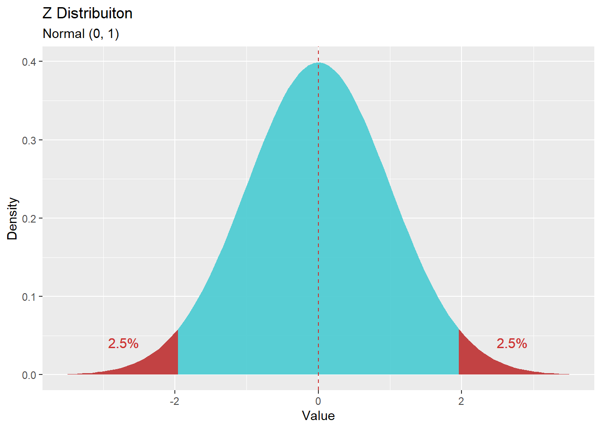
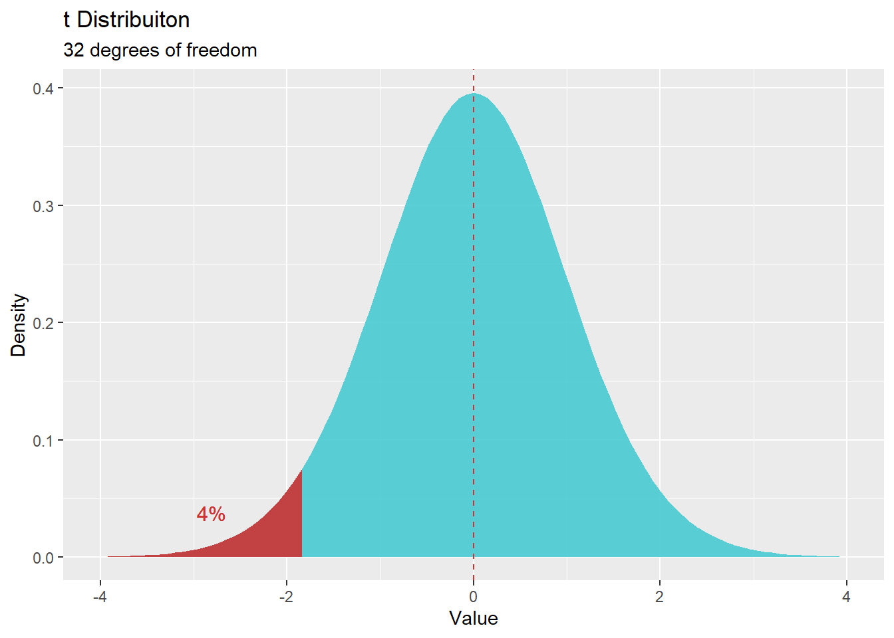

פרק 10 - הסקה סטטיסטית
מושגים בסיסיים
\(H_0\):
השערת האפס. ההשערה הבסיסית - השמרנית. כל עוד לא קיבלנו תוצאה קיצונית במבחן הסטטיסטי, נניח שהיא נכונה.
\(H_1\):
ההשערה האלטרנטיבית, השערת החוקר. רק במקרה שבו נקבל תוצאה קיצונית במבחן הסטטיסטי - נקבל את ההשערה האלטרנטיבית ונדחה את השערת האפס.
התפלגות הדגימה:
התפלגות תיאורטית שמתארת את הסטטיסטים השונים שיכולים להתקבל בהינתן אינסוף מדגמים.
ככל שערך קיצוני יותר: פחות סביר שהוא יתקבל ממדגם אקראי.
התפלגות הדגימה מאפשרת לתאר מה נחשב סטטיסטי קיצוני.
לדוגמא - אם הסטטיסטי שחישבנו מתוך המדגם הוא ממוצע, אז התפלגות הדגימה של הממוצע תייצג את כל הממוצעים שיכולים להתקבל בהינתן אינסוף מדגמים אקראיים באותו גודל.
בעזרת משפט הגבול המרכזי ניתן להניח שבמדגמים גדולים מספיק התפלגות הדגימה של הממוצע היא נורמלית בקירוב.
p-value:
ההסתברות לקבל את הסטטיסטי שהתקבל במבחן או ערך קיצוני ממנו, בהנחה ש
\(H_0\)
נכונה.
רמת מובהקות (\(\alpha\)):
ההסתברות לדחות את \(H_0\)
שלא בצדק. הסיכוי לטעות מסוג ראשון.
רמת ביטחון (\(1-\alpha\)):
המידה בה ניתן לסמוך על המסקנה שהתקבלה לבסוף.
ערכים קריטים
נחלק את השימוש בערכים קריטיים לשניים:
בהקשר של מבחני השערות:
הערך הקריטי מגדיר מה היא תוצאה קיצונית במדגם, במדד של טעויות תקן (סטיית תקן של התפלגות הדגימה).
כלומר, אם המרחק בין הסטטיסטי שקיבלנו במדגם לבין תוחלת התפלגות הדגימה (בטעויות תקן) גדול או שווה לערך הקריטי - נדחה את השערת האפס ונקבל את ההשערה האלטרנטיבית.
בהקשר של אמידה: כאשר מחשבים רווח בר סמך, הערך הקריטי מגדיר את שולי הרווח. כלומר, כאשר מסתכלים על התפלגות הדגימה - התוחלת תהיה שווה לסטטיסטי שקיבלנו במדגם. מרחקם של הגבולות משני הצדדים של ההתוחלת, במדד של טעויות תקן, יהיה שווה לערך הקריטי.
חישוב \(Z\) קריטי
התפלגות \(Z\) היא למעשה ההתפלגות הנורמלית הסטנדרטית (\(\mu = 0,\space \sigma = 1\))
qnorm(*confidence level*)לדוגמא: עבור השערה חד זנבית ימנית עם \(\alpha = 0.05\)
נרצה לקבל את ציון התקן אשר ההסתברות המצטברת עד אליו היא \(0.95\).
זהו ציון ה\(Z\) הקריטי.
qnorm(0.95)## [1] 1.644854עבור מבחן דו זנבי ואותה רמת ביטחון - ערכים קיצוניים ייתכנו משני הצדדים (\(0.025\) מכל צד) ולכן ציון ה\(Z\) הקריטי יחושב עבור הסתברות מצטברת של \(0.975\).
qnorm(0.975)## [1] 1.959964
חישוב \(t\) קריטי
השונות של התפלגות \(t\)
תלויה בדרגות החופש ולכן גם הערך הקריטי תלוי בדרגות החופש, בנוסף ל\(\alpha\).
בלי להיכנס לתיאור המתמטי - דרגות החופש הן מדד שמבטא עד כמה אנחנו בטוחים במדגם / עד כמה הוא מייצג.
ככל שיש יותר דרגות חופש - כך נוכל “לסמוך” יותר על הסטטיסטי שקיבלנו.
בניסוח פרקטי: דרגות החופש שוות למספר הנבדקים פחות מספר הפרמטרים עליהם מבוסס חישוב הסטטיסטי.
qt(*confidence level*, *degrees of freedom*)לדוגמא:
עבור השערה חד זנבית שמאלית עם \(\alpha = 0.04\)
ו- \(df = 32\)
נרצה לקבל את ציון התקן אשר ההסתברות המצטברת עד אליו היא \(0.04\).
זהו ציון ה\(t\) הקריטי.
qt(0.04, 32)## [1] -1.808089
עבור מבחן דו זנבי, באותה רמת ביטחון - ערכים קיצוניים ייתכנו משני הצדדים (\(0.02\) מכל צד) ולכן ציון ה\(t\) הקריטי יחושב עבור הסתברות מצטברת של \(0.98\).
qt(0.98, 32)## [1] 2.140904